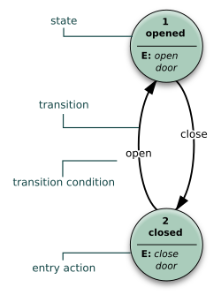

State diagram
Mis on State diagram?
Olekudiagrammid annavad süsteemi käitumise abstraktse kirjelduse .
Seda käitumist analüüsitakse ja kujutatakse sündmuste jadaga, mis võivad
toimuda ühes või mitmes võimalikus olekus.
Kus kasutatakse State diagram?
Olekudiagrammi kasutatakse arvutiteaduses ja sellega seotud valdkondades süsteemide
käitumise kirjeldamiseks.
Näide

Viited infoallikatele